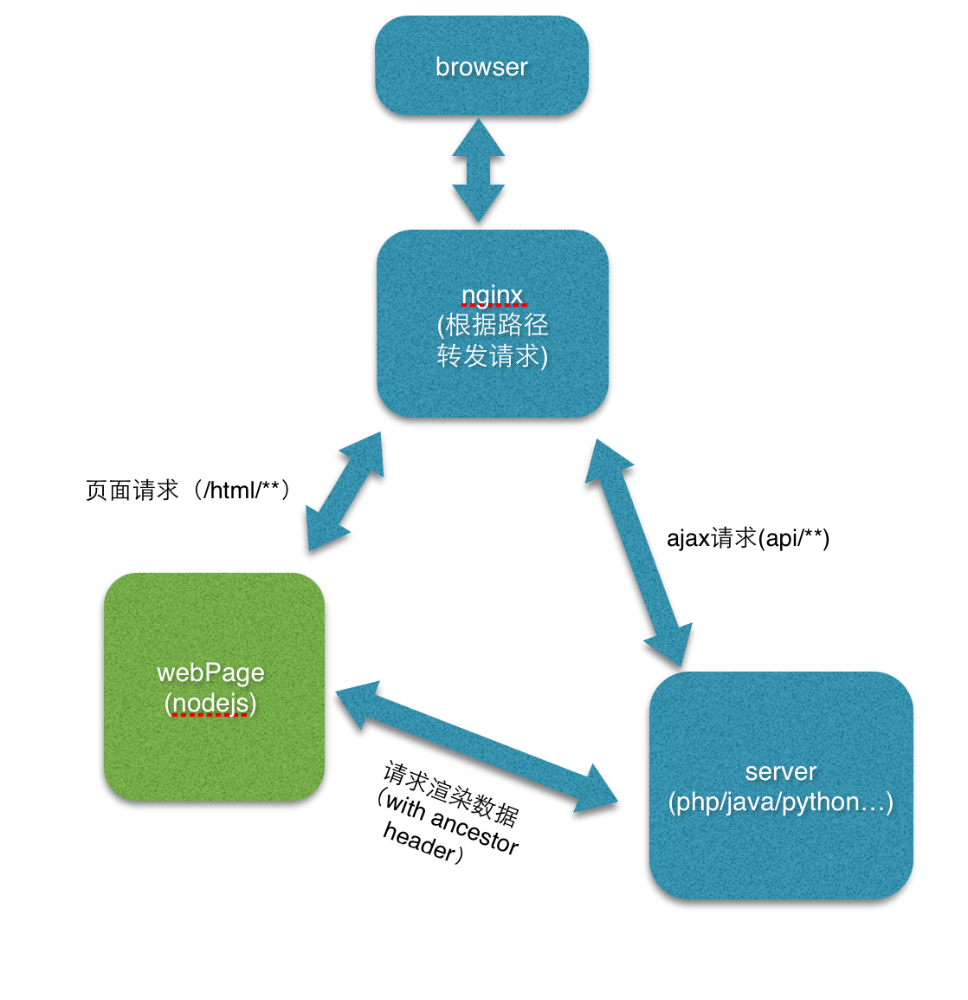

根据接口文档自动生成假数据
加入json-schema规则，实现了对http请求的参数校验。
用着一样的模版语言 XTemplate，一样的渲染引擎 JavaScript
在不同的渲染环境（Server-side、PC Browser、Mobile Browser、Web View、etc.）渲染出一样的结果。
该解决方案，session，登录态什么的仍然是后端管理; 前端仍然只管理模板，只不过起了后台来管理模板；对后端来说，除了nginx配置改变几乎没有任何新的东西。

一个难点在于web 与 services 的数据交互。好在facebook开源的一个项目 Thrift 为我们解决了这个问题。 Demo中使用了Nodejs 的Express搭建web服务，使用 Thrift 生成 Node 的client和server的接口文件。
Client:
var client = thrift.createClient(Calculator, connection);
router.get( '/', function (req, res, next)
{
client.add( 10, 100 )
.then( function (response) {
res.render( 'index', { title: 'Express + Thrift', desc: '：1+1=' + response });
});
});
/* jade */block content h1= title p Welcome to #{title
}
Server
/* Nodejs server */...var
server = thrift.createServer(Calculator, {
add: function (n1, n2)
{
var result = n1 + n2;
return result;
}
});
console.log("localhost:9090" );
server.listen( 9090);
其实，没有哪个语言或框架适合做全栈，即使如Spring也不行（web层不轻量）。
node.js有一下缺陷： - 臭名昭著的异步回调。上8层的异步调用嵌套实在难读和难以维护。 - javascript 的不严谨和 灵活性导致了程序在运行过程中很容易出现难以调试的Bug，而Bug的日志会让人摸不着头脑。 - 完全异步化带来的另一个问题就是调试困难。 - 没法直接发挥多核、多CPU的服务器的优势。 - 没有像Java一样的工程化体系、中间件、开源库。 - 要真正以node来支撑开发一个电商平台对JS工程师的要求非常高，我觉得业内这样的人才依然相当难觅，上手容易不等于高级功能也容易。
只作为web层 ： - 如果你要做的是小型项目，或者逻辑非常简单的项目，可以选择Node.js，因为开发、调试都很很快。 - 如果你要做的是逻辑简单，而并发大的项目，可以选择Node.js，它还是很适合左右游戏的聊天服务器，长连接消息推送服务器之类的项目的。 - 在真正的重要的、大型的项目上请不要盲目，追求一些比如“语言层面的前后端统一”这样的议题，这是没有意义的。 - paypal只是把web端开发从JSP切换成了node.js，系统平台里的该是什么还是什么。还有类似的例子就是Groupon，他们也用node重构了网页部分内容，沃尔玛亦然。
结论： - 1、 如果能用Java做，就用Java做，参考淘宝网。 - 2、如果做大了需要升级用户体验，后端服务器接口化，前端服务器用Node.js替换，参考淘宝网前后端分离实践。 - 3、考虑到电商项目的失败率，项目有很大的可能走不到第二步，请先考虑第一步。 - 4、不是所有公司都像淘宝一样有大量的技术储备力量，去完成前后端分离，创业公司或不大的公司还是选择一种技术栈比较合适。
PS: - Web服务器端一直都存在两个阵营，以Java/C#为代表的工业设计语言和以PHP/RoR为代表的快速开发语言。前者一直牢牢地占据着企业应用开发市场，而后者则普遍认为更适合灵活多变的互联网，Node.JS显然是属于后者的。 - 用 Java / JSP 来开发网站太过于重量过于繁琐了，不如 RoR / PHP 等动态脚本语言灵活快速。
Sinatra-like - Express - koa.js - hapi
koa.js比Express先进最重要的一点：koa.js在coroute上所做工作，引入yield，不再需要多层的异步调用嵌套。
Rails-like - sails
sails在windows下安装需要python2.7， VC++2010的支持，太麻烦，我没有安装试用。
Node.js渲染模板 ICanHaz.js / mustache / hogan.js / Jade / Haml / /Slim / CoffeeKup / Markaby / ejs / eco 等
Java做后端优势： - 熟悉 Java 的工程师很多，我们很容易找到需要的人。 - Java 平台的性能已经的到多年的验证。 - Java 平台上众多的第三方产品、类库无所不有。 - 基于 JVM 的动态/函数式语言也给了 Java 平台良好的扩展性。
基于dubbo的前后端分离分为两大类，一类是dubbo+阻塞前端WebServer，如dubbo+tomcat，dubbo+Apache PHP；另一类是duboo+异步非阻塞WebService，如：dubbo+nodejs， dubbo+ratpack。涉及到的前端WebServer有基于Java和非Java的，列举流行的几种说明：
nodejs与dubbo服务通信有两种方式：Hessian, jsonrpc。Hessian协议dubbo原本就支持，而jsonrpc协议需要另外实现，不过万幸Github上已经有人做了。
QianmiOpen/ dubbo-rpc-jsonrpc QianmiOpen/dubbo-node-client
另一个node-dubbo客户端：
node-jsonrpc-dubbo使用json-rpc协议，使node可以调用dubbo的服务
var client = require('./dubbo-client');
var provider = 'com.ofpay.demo.api.UserProvider';
//简单的调用一个接口
client.getProvider(provider, function(err, userProvider) {
err
? console.log(err)
: userProvider.queryAll(function(err, data) {console.log(err, data);});
});
//group version support
client.getProvider(provider, 'test1', '2.1', function (err, userProvider) {
err
? console.log(err)
: userProvider.queryAll(function(err, data) {console.log(err, data);});
});
基于Dubbo的Hessian协议实现远程调用 [nodejs zookeper 客户端 通过hessian 与dubbo交互](
https://github.com/xuyan2680/node-java)
Ratpack is a set of Java libraries that facilitate fast, efficient, evolvable and well tested HTTP applications.
It is built on the highly performant and efficient Netty event-driven networking engine.
Ratpack focuses on allowing HTTP applications to be efficient, modular, adaptive to new requirements and technologies, and well-tested over time.
Ratpack可以使用Groovy和Java，运行与JVM上，调用dubbo服务很方便。
Ratpack的问题是服务器集群方案、负载均衡等没有现成案例。
可以通过Hessian协议来调用。